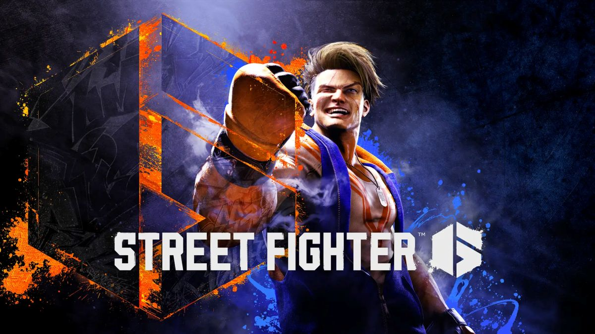

ライト
FHD 144fps
- 予算目安 15万円前後
- CPU Ryzen 7 5700X
- GPU RTX 5060
FHD 144fps環境を狙いやすい構成。スト6を快適に遊びたい初心者向けです。

格闘ゲーム / 軽量〜中量級
ストリートファイター6を144fpsで快適に遊ぶためのおすすめゲーミングPCを紹介。初心者向けに必要スペックや予算別構成をわかりやすく解説します。
RECOMMENDED BUILDS
スト6は格闘ゲームの中では比較的軽めのタイトルです。まずは高fps環境を目標にして、安定した操作感を手に入れましょう。
ライト
FHD 144fps環境を狙いやすい構成。スト6を快適に遊びたい初心者向けです。
迷ったらこの構成
ミドル
WQHDでも快適に遊びやすく、長く使いやすい定番構成です。高Hzモニターとも相性が良いです。
PC SPEC GUIDE
スト6は格闘ゲームの中では比較的軽めのタイトルですが、安定した144fps以上を出すにはCPU性能も影響します。低遅延・安定fpsが快適なプレイに直結するため、バランスの良い構成がおすすめです。まずはFHD 144fps環境を目標に選ぶと失敗しにくいです。
TARGET
FHD / 144fps以上
BUDGET
15万〜25万円前後
RESOLUTION
スト6はfpsの安定を重視したい格ゲーです。FHDで高fpsを確保するのが基本で、より綺麗な映像も楽しみたい場合はWQHDも候補になります。
FHD
12万〜18万円前後が目安。スト6 144fps環境を安定して出せるCPUとGPUのバランスが大切です。
WQHD
18万〜24万円前後が目安。スト6 WQHDで画質とfpsを両立でき、高Hzモニターとの相性も良いです。
4K
GPU負荷が上がり、fps重視の格ゲーには向きにくいです。スト6 PCスペックを活かすならFHD〜WQHDが現実的です。
GPU GUIDE
スト6のFHD 144fps環境ならRTX 5060級で十分狙えます。WQHDや高fpsを安定させたいならRTX 5070級が扱いやすい目安です。格ゲーは低遅延・安定fpsが重要なので、無理に上位GPUを選ぶよりCPUとのバランスを意識するのがおすすめです。
BEGINNER NOTE
スト6では安定したfpsとモニターの低遅延が快適なプレイに繋がります。144Hz以上のゲーミングモニターを使う場合は、PC本体だけでなく映像ケーブルとモニターのリフレッシュレート設定も合わせて確認しましょう。アケコン・レバーレスコントローラーを使う場合も、PC側のスペックは変わりません。
SHOP LINKS
現在、販売サイトへのリンクを準備しています。公開後はこのエリアから確認できます。
RECOMMENDED
FHD / 144fps以上
BUDGET
15万〜25万円前後
POINT
スト6はCPUとGPUのバランスが大切です。まずはFHD 144fps環境を目標にすると選びやすく、失敗しにくいです。高Hzモニターと合わせると操作の快適さが大きく上がります。
CAUTION
4K環境よりもFHD〜WQHDで高fps・低遅延を安定させる方が、スト6では快適に感じやすいです。モニターのリフレッシュレート設定も忘れずに確認しましょう。